À propos
Je m'appelle Soraya Othman et je suis actuellement étudiante en BTS SIO, spécialité SLAM (Solutions Logicielles et Applications Métiers). Après avoir obtenu un bac professionnel ASSP (Accompagnement, Soins et Services à la Personne), j'ai poursuivi des études de cinéma, puis travaillé comme vendeuse dans un magasin de jouets.
J’ai toujours été curieuse et attirée par le domaine de l’informatique. Cette curiosité m’a poussée à reprendre mes études afin d’en apprendre davantage et de me former sérieusement au développement web et logiciel. Aujourd’hui, je construis mon avenir dans un secteur qui me passionne réellement.

Projets
Bibliothèque en ligne
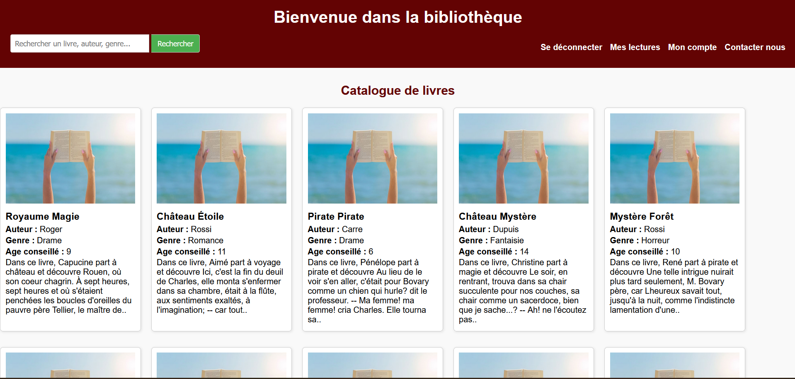
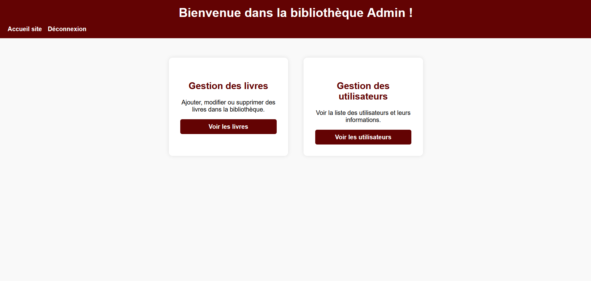
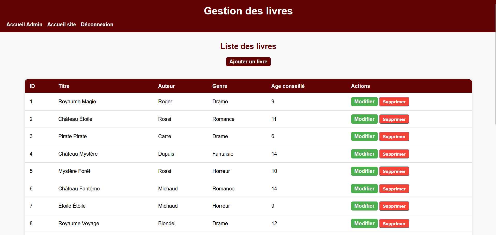
Technologies : PHP, Laravel, MySQL, HTML, CSS, JavaScript
Application web de bibliothèque en ligne permettant aux utilisateurs de louer et gérer des livres. Le projet inclut :
- Gestion des utilisateurs et authentification.
- Consultation du catalogue de livres avec recherche et filtres.
- Réservation et suivi des emprunts de livres.
- Interface admin pour ajouter, modifier et supprimer des livres et utilisateur.
Le projet est développé avec le framework Laravel pour la gestion des routes, des contrôleurs, des vues Blade et des migrations de base de données MySQL.
Voir sur GitHubBilletterie
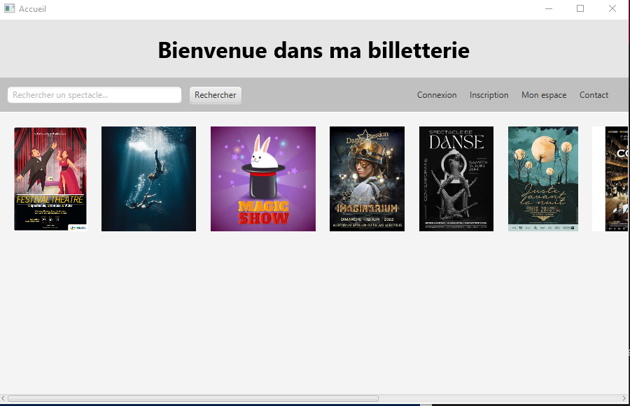
Technologies : Java, FXML, JavaFX, Wamp
Ce projet est une application de billetterie en cours de développement, conçue pour permettre aux utilisateurs de consulter et gérer des spectacles. La version actuelle inclut un accueil interactif où l'utilisateur peut se connecter à son compte client ou s'inscrire s'il est nouveau. Depuis l'accueil, il est possible de rechercher un spectacle spécifique grâce à une barre de recherche dynamique, et d'afficher les détails complets de chaque spectacle sélectionné.
L'application offre également un espace personnel appelé "Mon espace", où l'utilisateur peut consulter, modifier ou supprimer les informations de son compte. Le projet est structuré selon le modèle MVC, avec des vues en FXML, des contrôleurs JavaFX pour gérer les interactions, et des modèles Java pour accéder et manipuler les données stockées dans la base MySQL via Wamp.
Cette billetterie constitue la version 1 du projet, et elle pose les bases pour intégrer des fonctionnalités supplémentaires comme l'achat de billets, la gestion avancée des spectacles et une interface plus riche et interactive.
Voir sur GitHubApplication Sonistock
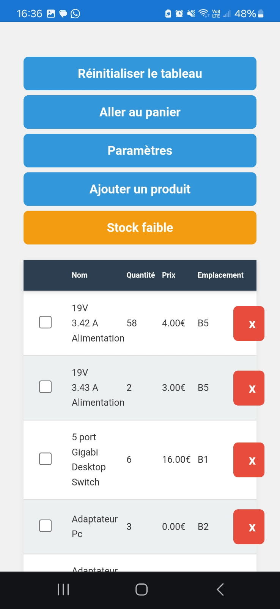
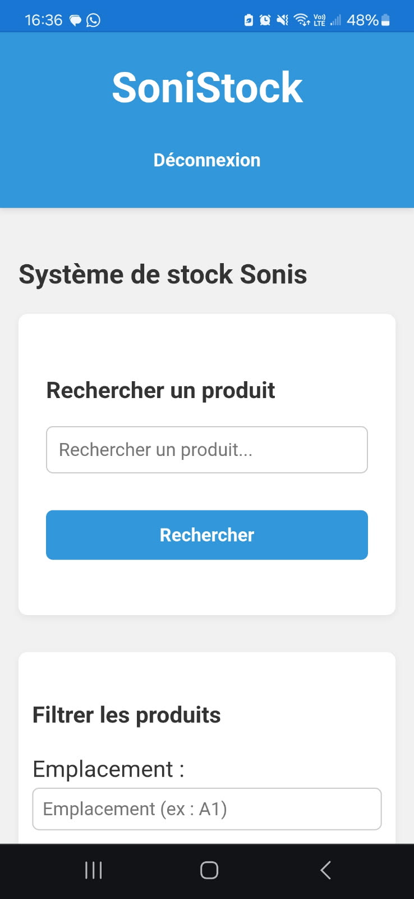

Technologies : HTML, CSS, JavaScript, Node.js, XAMPP, phpMyAdmin
Application web développée durant mon stage chez Sonis pour gérer le stock de matériel informatique :
- Base de données gérée localement avec phpMyAdmin (via XAMPP).
- Connexion/déconnexion
- Recherche/filtre
- Tableau des produits avec le prix, les quantitées, l'emplacement et une case pour sélectionner
- Tableau des produits sélectionner dans le panier pour valider le choix
- Interface mobile pour les techniciens : retrait du matériel.
- Interface admin : ajout, modification, suppression de produits,
- Gestion des techniciens (ajout, édition, suppression),
- Modification de l'horaire d’envoi automatique des e-mails de stock faible,
Jeu Tetris
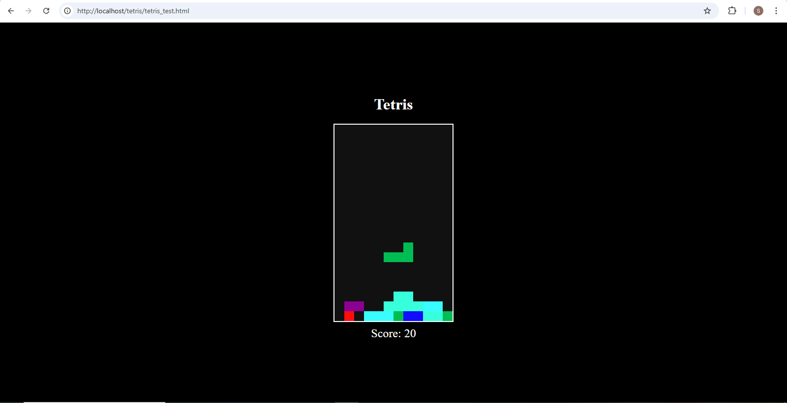
Technologies : HTML, CSS, JavaScript
Un jeu Tetris codé en JavaScript avec gestion des collisions, des lignes et du score. Interface simple et responsive.
Voir sur GitHubLocation de voitures en ligne

Technologies : PHP, MySQL, HTML, CSS
Application web e-commerce pour la location de voitures, permettant aux utilisateurs de :
- Créer un compte et se connecter (authentification).
- Consulter le catalogue des voitures disponibles avec filtres et détails.
- Ajouter des voitures dans le panier.
Le projet utilise PHP et MySQL pour la gestion des utilisateurs, du catalogue et du panier.
Voir sur GitHubSite e-commerce "Fiestita"
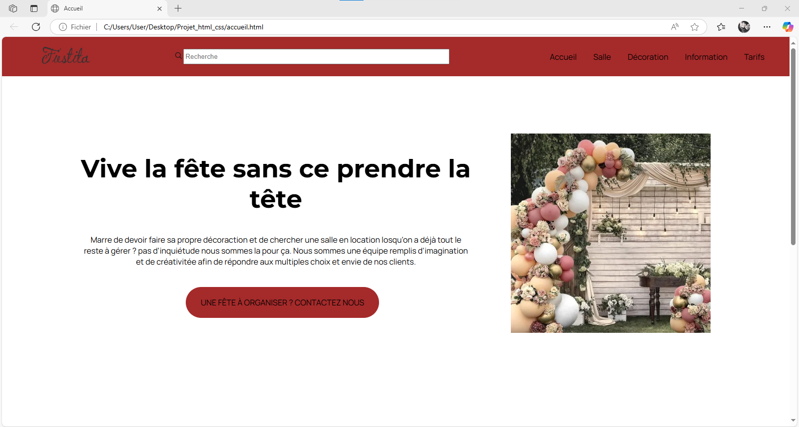
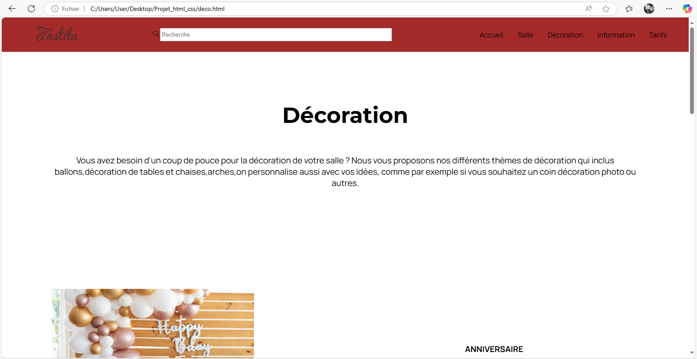
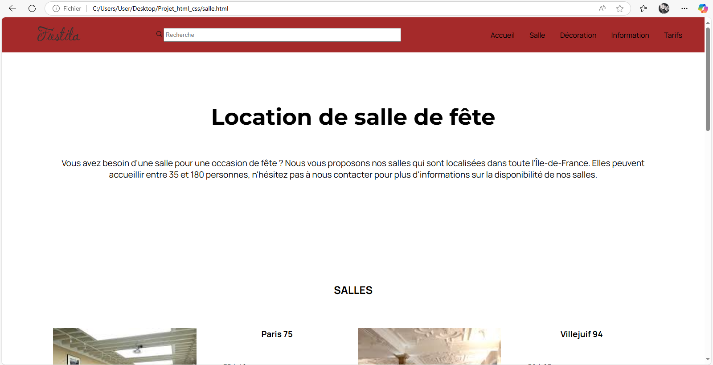
Technologies : HTML, CSS
Un site vitrine de type e-commerce pour une entreprise spécialisée dans l’organisation de fêtes : anniversaires, mariages, événements professionnels, etc.
Voir sur GitHubSite Photographe - Exercice OpenClassrooms
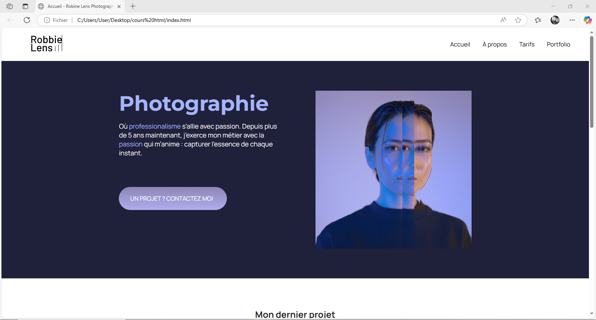

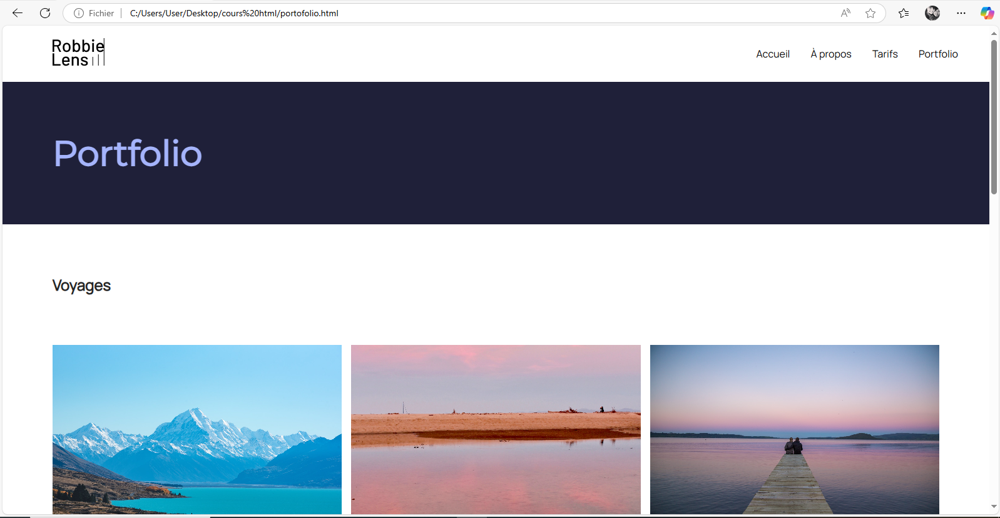
Technologies : HTML, CSS
Projet réalisé dans le cadre d’un exercice sur la plateforme OpenClassrooms. Il s’agissait de créer le site vitrine d’un photographe professionnel, en respectant une maquette donnée.
Voir sur GitHubExpérience professionnelle
Stage 2 ème année - Sonis
Durée : 7 semaines
Rôle : Développement et amélioration de l'application Sonis Stock
Missions :
- Ajout de nouvelles fonctionnalités dans l'application : calcul automatique du total prix et quantité même après filtrage ou recherche dans le tableau.
- Implémentation de l'exportation d'un tableau Excel des produits affichés, prenant en compte les filtres et recherches appliqués.
- Correction du système de resend pour l'envoi des emails de confirmation pour les différents mouvements de stock.
- Nettoyage et vérification de la base de données clients : correction des mauvaises saisies et suppression des doublons pour rendre la base plus claire et fiable.

Stage - Sonis
Durée : 7 semaines
Rôle : Support technique niveau 1 et développement d'une application de stock.
Missions :
- Développement d'une application de gestion de stock avec interface mobile.
- Réalisation de l'inventaire complet et intégration dans une base de données.
- Interface techniciens pour : recherche des produits, retrait de matériel.
- Interface administrateur pour : ajout, modification, suppression de matériel. Paramétrage des horaires d’envoi automatique d’emails (stock faible). Gestion des comptes techniciens : ajout, modification, suppression.
Vendeuse - King Jouet
Durée : 4 ans
Rôle : Vendeuse dans un magasin de jouets, où j’ai conseillé les clients sur les produits, géré les stocks et contribué à la mise en valeur des articles pour améliorer l'expérience d'achat.

Vendeuse en produits informatiques et gaming - Achatmania
Événements : Paris Games Week, Toulouse Game Show, DreamHack
Rôle : Vendeuse de produits informatiques et gaming lors de salons spécialisés dans le secteur. Conseil, démonstration et vente de produits aux visiteurs, en mettant en avant leurs spécificités et avantages.
Veille technologique
🤖 L'IA au service de l'automatisation des bases de données
L'intelligence artificielle révolutionne la gestion des bases de données en automatisant des tâches jusqu'ici entièrement manuelles. En tant qu'étudiante en BTS SIO SLAM, et ayant travaillé directement avec des bases de données MySQL dans mes projets, ce sujet m'a naturellement attirée.
Des outils comme AI2SQL ou Chat2DB permettent de poser une question en français — « Quels produits sont en rupture de stock ? » — et l'IA génère automatiquement la requête SQL correspondante. Plus besoin de connaître la syntaxe par cœur pour interroger une base.
L'IA peut détecter et corriger automatiquement les doublons, les valeurs aberrantes et les champs mal renseignés — une tâche que j'ai effectuée à la main lors de mon stage. Elle peut aussi anticiper les ralentissements ou saturations avant qu'ils ne surviennent.
L'IA analyse les requêtes existantes et suggère des améliorations : ajout d'index, réécriture de jointures inefficaces, mise en cache intelligente. La base reste rapide même quand le volume de données grandit.
⚠️ Limites
L'IA ne remplace pas la maîtrise du SQL : une base mal structurée produira des résultats inexacts. La sécurité reste également un enjeu majeur — laisser une IA agir sur une base de données en production exige des contrôles d'accès stricts et une supervision humaine.
📚 Sources
- Blog Google Cloud — Text-to-SQL avec les LLMs (déc. 2025)
- Zencoder — Meilleurs outils IA pour SQL en 2025
- Korben — Veille tech & outils développeurs (newsletter)
Contactez moi
LinkedIn : Cliquer ici pour voir mon profil
GitHub : Cliquer ici pour voir mon profil